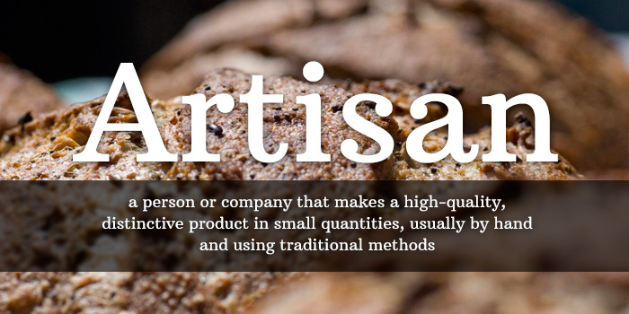

<ion-header>
    <ion-navbar>
  <ion-toolbar color="primary">
    <ion-title>Welcome !!!</ion-title>
    <ion-buttons end>
        <button ion-button icon-only (click)="goToProfile()">
          <ion-icon name="person"></ion-icon>
        </button>
        <button ion-button icon-only (click)="logOut()">
            <ion-icon name="log-out"></ion-icon> 
         </button> 
      </ion-buttons>
  </ion-toolbar>
  </ion-navbar>
</ion-header>

<ion-content padding>
    
    The world is your oyster.
  <p>
    If you get lost, the <a href="http://ionicframework.com/docs/v2">docs</a> will be your guide.
  </p>
</ion-content>
